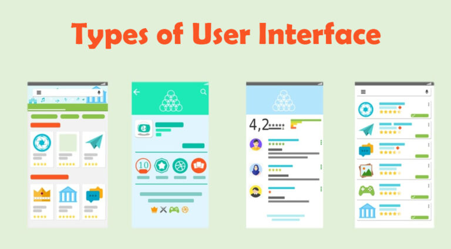

Designers face a challenge when it comes to novice users and helping them become expert users without the use of training aids. With the continuous development of technology, it is becoming easier to have realistic user interface performances enhanced by the metaphors. Some interface metaphors may not change as users have become so familiar with them and developers are afraid of risking losing users due to changes and taking away the familiarity they may have gained with the application.
It is important however for future developments to consider culturally diverse metaphors and their impact on communication. Metaphors form a significant part of a communication even in language as seen in poetry and writers make use of them in their novels. They aren’t just literature techniques as I have personally known them but rather can be used for psychological effects as well. They can instil an idea or change the way in which we see or understand something on an unconscious level. Just like their unintentional use in language at times, designers make use of them for interfaces.
For user interface developers to achieve successful applications they need to understand and fully plan out interface metaphors to achieve higher audience traction and interaction. Making use of these metaphors will instantly yield good user experience and better comprehension of the web content.
Bibliography
Aaron Marcus, P. A., & Inc. (1998, April). Metaphor Design for User Interface. pp. 29-130.